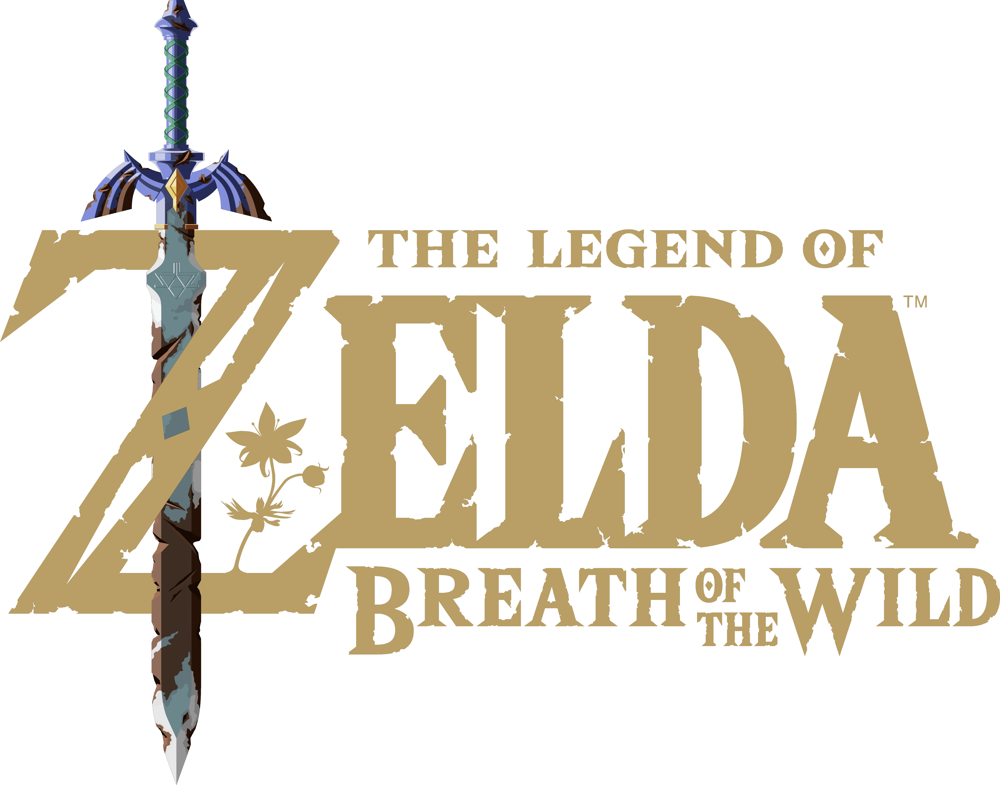
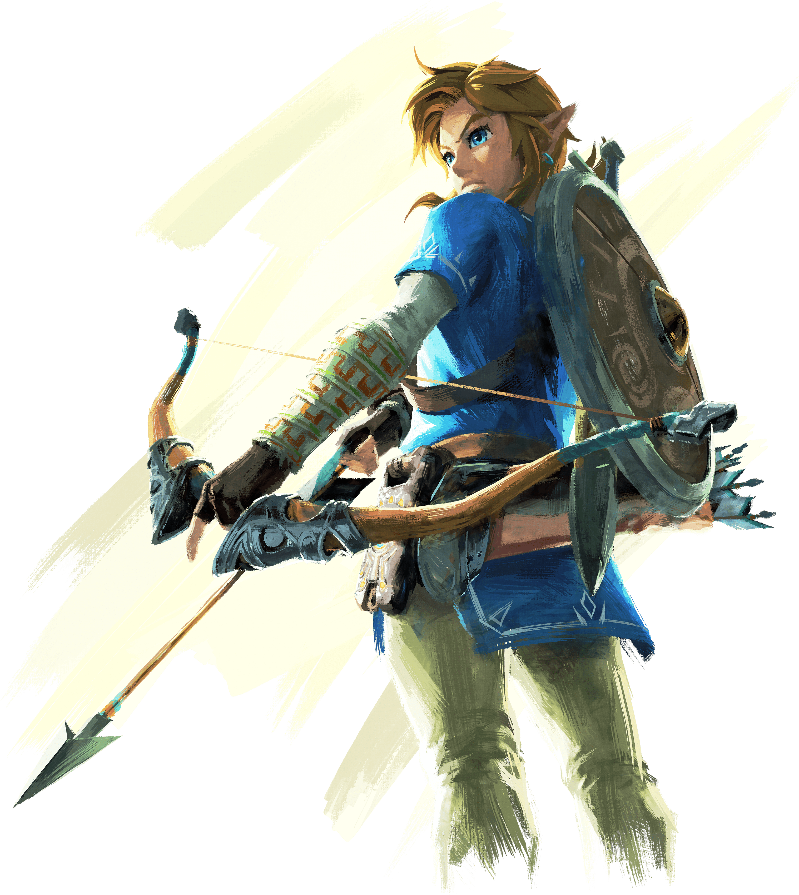
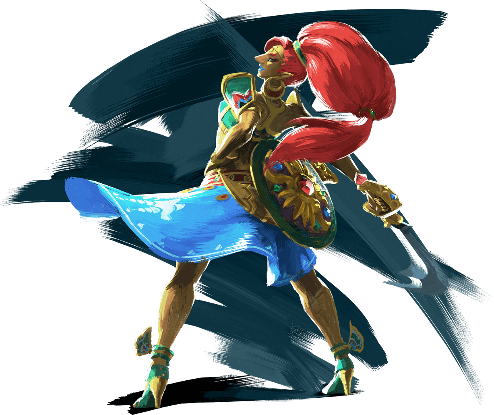
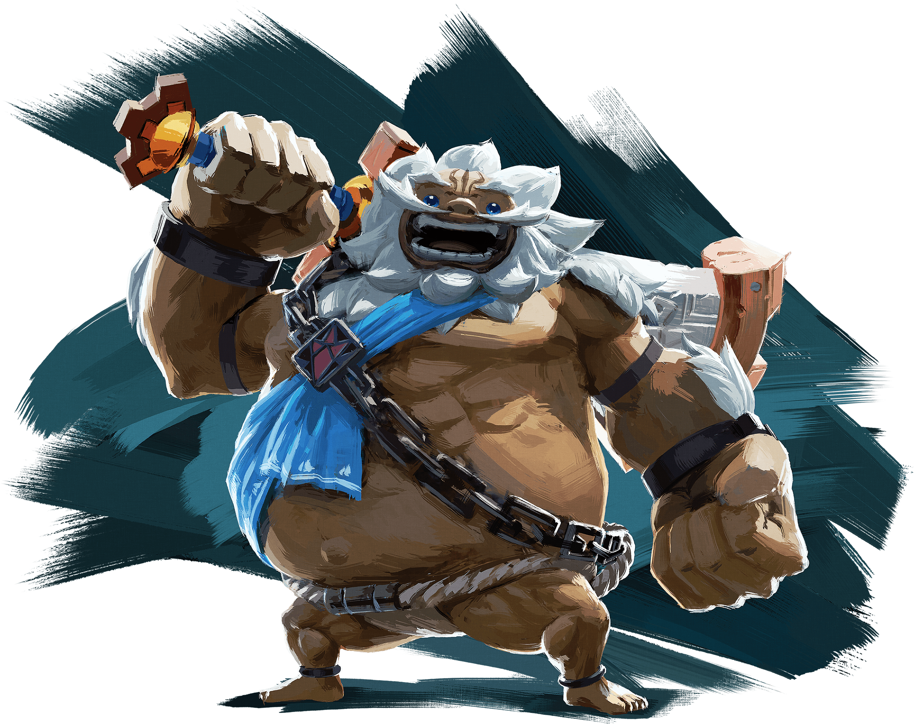
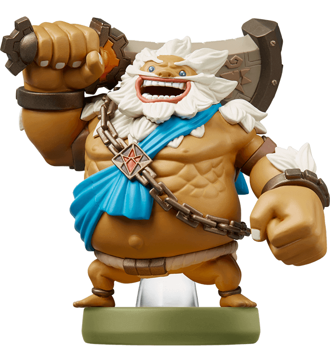
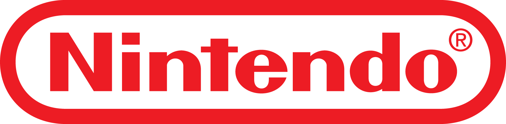

<!DOCTYPE html><html lang="en"><head><meta charset="UTF-8"><meta name="viewport" content="width=device-width, initial-scale=1.0"><meta http-equiv="X-UA-Compatible" content="ie=edge"><meta property="og:url" content="https://fervent-cray-d32469.netlify.com"><meta property="og:type" content="website"><meta property="og:title" content="Zelda: Breath of the Wild"><meta property="og:description" content="Un voyage époustoufflant et GRANDIOSE"><meta property="og:image" content="../img/characters/link-rider.png"><title>Zelda: Breath of the Wild</title><link href="styles.css" rel="stylesheet"></head><body><script type="text/javascript" src="app.453cac16acee1679a5a3.js"></script></body><header></header><a class="sticky-btn" href="#">commander le jeu</a></html><section class="intro"><div class="wrapper-content__darkBottom"><div class="intro__ctn"><h1 class="intro__logo"></h1><h2 class="intro__title">Un voyage <br> <span>époustouflant</span> et GRANDIOSE</h2><a class="buttons-wrapper__btn buttons-wrapper__btn--darkBig" href="#">commander le jeu</a></a><div class="intro__bottom-ctn"><h3>Lancez vous dans l'aventure</h3><div></div></div></div></div></section><section class="monde"><div class="video-content"><iframe src="https://www.youtube.com/embed/XVipqzY_jBc?showinfo=0" width="100%" height="100%" frameborder="0"></iframe></div><div class="wrapper-info"><h2 class="wrapper-info__title">Un monde<span class="wrapper-info__subtitle">à explorer</span></h2><p class="wrapper-info__desc">Explorez les paysages d’Hyrule comme bon vous semble. Grimpez jusqu’au sommet des tours et des montagnes pour trouver de nouvelles destinations, puis choisissez votre propre chemin et plongez au cœur des contrées sauvages.</p><div class="buttons-wrapper"><a class="buttons-wrapper__btn buttons-wrapper__btn--light" href="#">Découvrir</a><a class="buttons-wrapper__btn buttons-wrapper__btn--dark" href="#">Commander le jeu</a></div></div></section><section class="histoire"><div class="wrapper-info wrapper-info__left"><div class="wrapper-img wrapper-img__link"></div><h2 class="wrapper-info__title">Une histoire <br><span class="wrapper-info__subtitle">à découvrir</span> </h2><p class="wrapper-info__desc">Aidez Link à retrouver sa mémoire d'avant qu'il ne se réveille seul dans ce royaume oublié. Lancez-vous avec lui à la découverte d'une vaste et dangereuse contrée pour faire la lumière sur ses souvenirs perdus, avant qu'Hyrule ne soit jamais perdu.</p><div class="buttons-wrapper"><a class="buttons-wrapper__btn buttons-wrapper__btn--light" href="#">Découvrir</a><a class="buttons-wrapper__btn buttons-wrapper__btn--dark" href="#">Commander le jeu</a></div></div></section><section class="personnages"><div class="wrapper-content wrapper-content__rightSide"><div class="wrapper-img wrapper-img__left"></div><div class="wrapper-img wrapper-img__right"></div><div class="wrapper-info"><h2 class="wrapper-info__title">Des personnages <br><span class="wrapper-info__subtitle">à rencontrer</span></h2><p class="wrapper-info__desc">Allez à la rencontre de toute une galerie de personnages hauts en couleurs. Certains vous demanderont de précieux conseils... mais soyez vigilent, car ils ne vous veulent pas tous que du bien.</p><div class="buttons-wrapper"><a class="buttons-wrapper__btn buttons-wrapper__btn--light" href="#">Découvrir</a><a class="buttons-wrapper__btn buttons-wrapper__btn--dark" href="#">Commander le jeu</a></div></div></div></section><section class="ennemis"><div class="wrapper-info wrapper-info__left"><h2 class="wrapper-info__title">Des ennemis <br><span class="wrapper-info__subtitle">à affronter</span></h2><p class="wrapper-info__desc">Quelque soit votre arme favorite, croisez le fer avec les créatures qui peuplent ce royaume désolé, et prouvez votre valeur au combat. Plus que d'une épée, vous devrez vous armer de courage et de bravoure.</p><div class="buttons-wrapper"><a class="buttons-wrapper__btn buttons-wrapper__btn--light" href="#">Découvrir</a><a class="buttons-wrapper__btn buttons-wrapper__btn--dark" href="#">Commander le jeu</a></div></div><div class="video-content"><iframe src="https://www.youtube.com/embed/HyI4R11cAdE?showinfo=0" width="100%" height="100%" frameborder="0"></iframe></div></section><section class="environment"><div class="wrapper-content wrapper-content__darkTop wrapper-content__rightSide"><div class="wrapper-info"><h2 class="wrapper-info__title">Un environnement <br><span class="wrapper-info__subtitle">à apprivoiser</span></h2><p class="wrapper-info__desc">Chassez, ceuillez, cuisinez… et prenez des forces pour affronter la faune, la flore et les intempéries d’un monde parfois encore plus dangereux que les monstres qu’il abrite.</p><div class="buttons-wrapper"><a class="buttons-wrapper__btn buttons-wrapper__btn--light" href="#">Découvrir</a><a class="buttons-wrapper__btn buttons-wrapper__btn--dark" href="#">Commander le jeu</a></div></div></div></section><section class="consoles"><div class="wrapper-content wrapper-content__darkBottom wrapper-content--consoles"><div class="wrapper-info wrapper-info__left wrapper-info--consoles"><h2 class="wrapper-info__title wrapper-info__title--sticky wrapper-info__title--console">Les consoles <br><span class="wrapper-info__subtitle">Nintendo</span></h2><div class="buttons-wrapper"><a class="buttons-wrapper__btn buttons-wrapper__btn--light" href="#">Découvrir</a><a class="buttons-wrapper__btn buttons-wrapper__btn--dark" href="#">Commander le jeu</a></div></div><div class="consoles-content"><div class="consoles-content_switch"><a class="consoles-btn consoles-btn--switch consoles-btn--active" href="#" id="switch">Switch</a><a class="consoles-btn consoles-btn--wii" href="#" id="wii">Wii U</a></div><div class="consoles-content_video"><iframe src="https://www.youtube.com/embed/herWXCE7bHI?showinfo=0" frameborder="0" width="100%" height="100%"></iframe></div><a class="consoles-btn--order buttons-wrapper__btn buttons-wrapper__btn--light" href="#" id="console-link">Commander la Nintendo Switch</a></div></div></section><section class="amiibo"><div class="wrapper-info wrapper-info__left wrapper-info--amiibo"><div class="amiibo-block"><h2 class="wrapper-info__title">Amiibo<br><span class="wrapper-info__subtitle">Entourez-vous des meilleurs aventuriers</span> </h2><p class="wrapper-info__desc wrapper-info__desc--light">Grâce aux figurines Amiibo, recevez des objets qui vous aiderons à progresser dans votre aventure et à redécouvrir Zelda : Breath of the Wild.</p><div class="buttons-wrapper"><a class="buttons-wrapper__btn buttons-wrapper__btn--light" href="#">Découvrir</a><a class="buttons-wrapper__btn buttons-wrapper__btn--dark" href="#">Commander le jeu</a></div></div><div class="amiibo-content"><div class="amiibo-slider"><div class="amiibo-slider__figure"><div class="wrapper-img wrapper-img--amiibo"></div><h3 class="amiibo-slider__figure-title">Daruk</h3></div></div><a class="consoles-btn--order buttons-wrapper__btn buttons-wrapper__btn--light" href="#">Voir les différents amiibos</a></div></div></section><section class="share"><p class="share__desc">Propagez les vents d’Hyrule et invitez d’autres aventuriers à parcourir les contrées désenchantées d’un Hyrule en ruines.</p><div class="share__btn fb-share-button" data-layout="button" data-size="large"><a class="fb-xfbml-parse-ignore" target="_blank" href="https://www.facebook.com/sharer/sharer.php?u&amp;amp;src=sdkpreparse">Partager</a></div></section><footer><div class="footer"><a href="https://www.nintendo.fr/"></a><div class="footer__wrapper-socials"><div><a class="twitter-follow-button" data-show-count="false" data-show-screen-name="false" href="https://twitter.com/intent/user?screen_name=nintendofrance" alt="Suivre Nintendo">Suivre</a></div><div><div class="g-ytsubscribe" data-channel="Nintendo" data-layout="default" data-count="hidden"></div></div><div><div class="fb-like" data-layout="button"></div></div></div><div class="footer__mentions"><div class="footer__mentions__conditions"></div><span>Politique de confidentialité</span><span>Conditions d’utilisation</span><p class="footer__mentions__desc">© 2017 Nintendo. The Legend of Zelda, Wii U, et Nintendo Switch sont des marques de commerce de Nintendo.</p></div></div></footer><script src="https://apis.google.com/js/platform.js"></script>